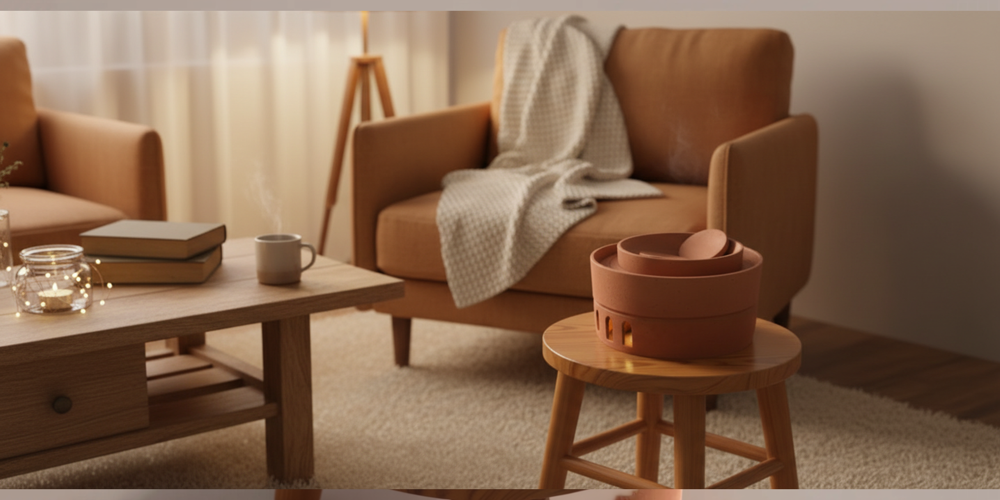
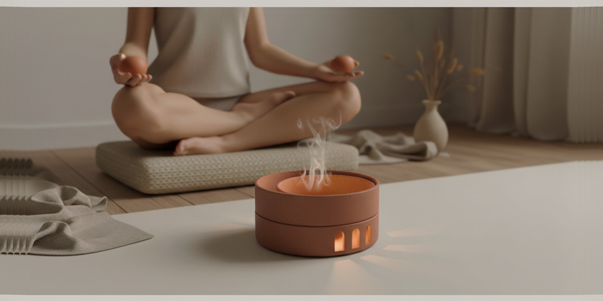
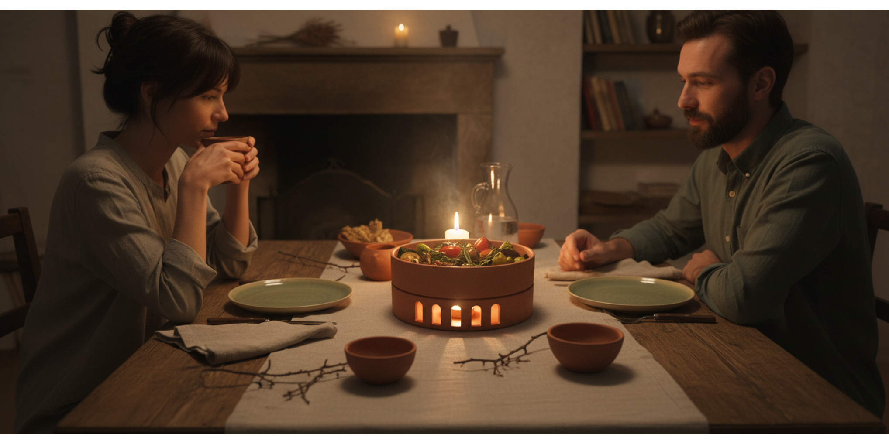

MULTIFUNCTIONAL RITUAL OBJECT
Terracota Mérida
Overview
Terracota Mérida was conceived as a response to rising anxiety levels in daily life, proposing an object that encourages conscious pauses through familiar rituals such as meditation, eating and ambient lighting. The project explores how a ceramic domestic object can become more than a utility piece, acting instead as a catalyst for calm, rhythm and emotional connection.

Problem
The project begins from a simple but important premise: many forms of anxiety relief are separated from daily life, while the objects that surround us rarely encourage moments of deliberate pause. Terracota Mérida addresses this by embedding calm into ordinary domestic actions, using material warmth and ritual interaction instead of technological overload.

Concept
The final proposal, named Inercia, is a multifunctional ceramic object that uses heat as its core experiential element. Through the same terracotta body, the object can support different ritual scenarios, linking bodily awareness, nourishment and atmosphere. Rather than separating these experiences into isolated products, the system brings them together through one coherent material and formal language.

Functions
The object was designed around three complementary modes of use. As a meditation object, it incorporates thermal ceramic elements that stimulate bodily presence, focus and relaxation. As a passive food warmer, it helps preserve temperature and supports slower, more conscious eating. As an ambient light, it emits a warm and diffuse glow that creates a calm atmosphere and helps mark transitions between moments of the day.

Domestic Scenarios
One of the strengths of the proposal is its ability to move across different domestic contexts without losing identity. It can appear as part of a dining setting, as a quiet meditative companion, or as a source of low ambient light in transitional spaces. This flexibility is not just functional, but emotional: the same object supports different rituals while maintaining a unified sensory language.

Gallery

